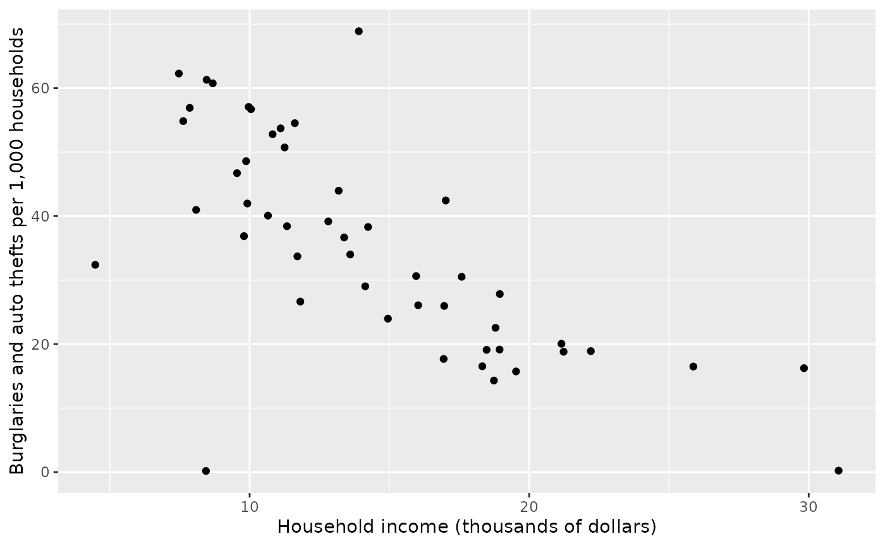
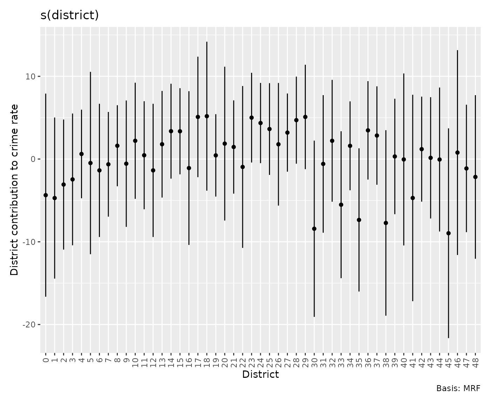
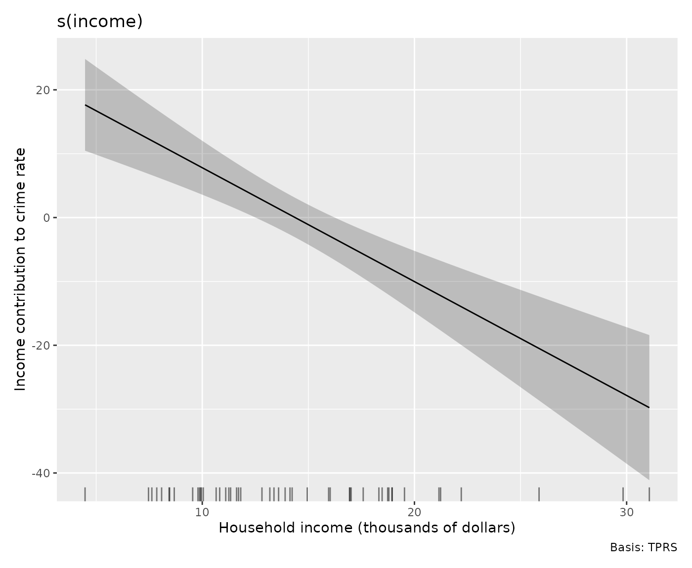
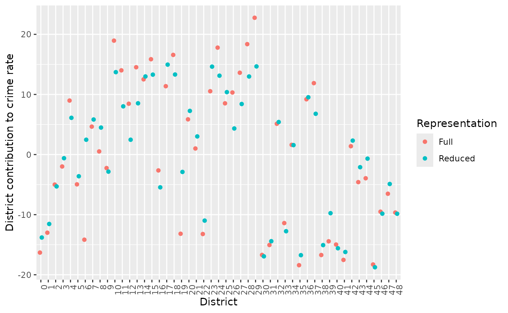
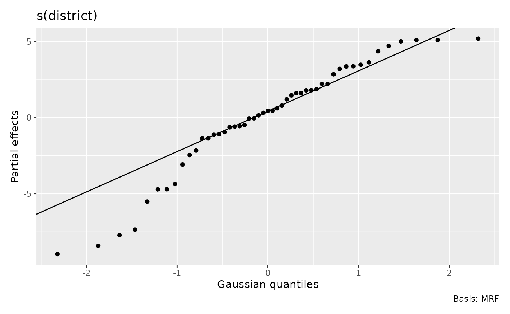
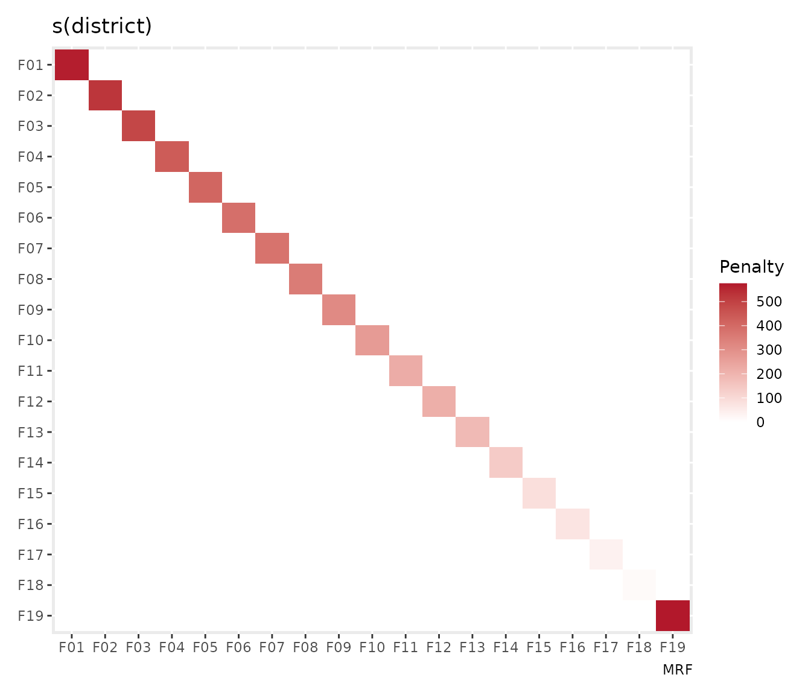
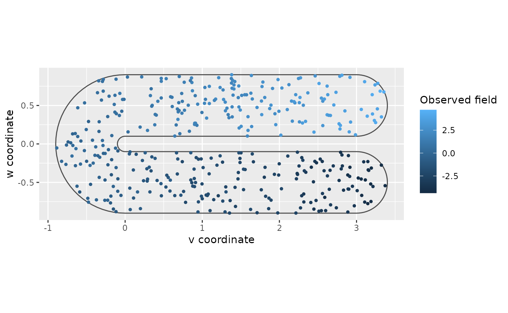
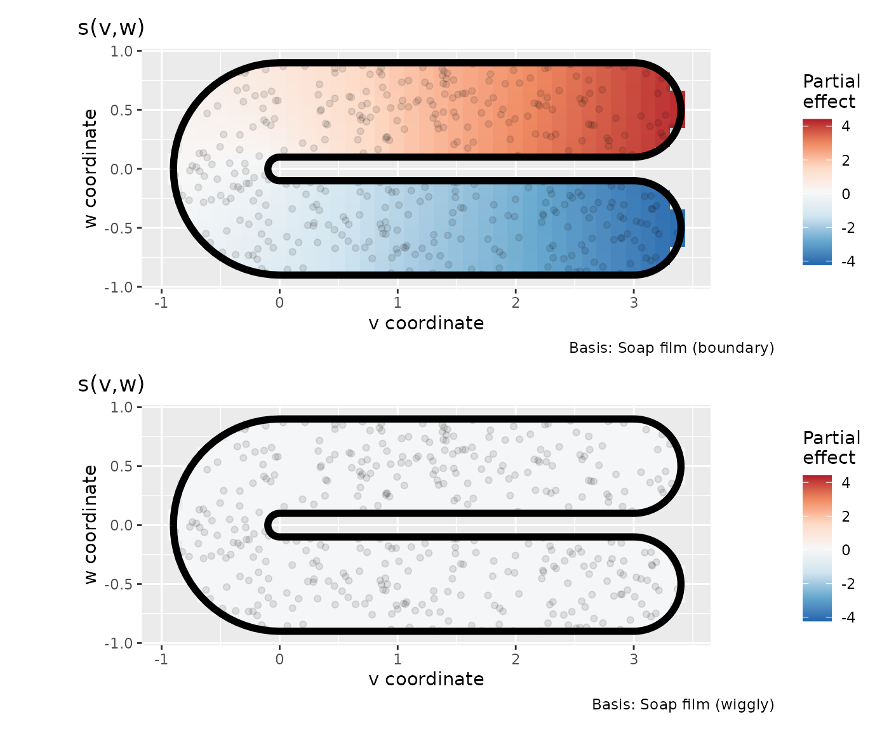
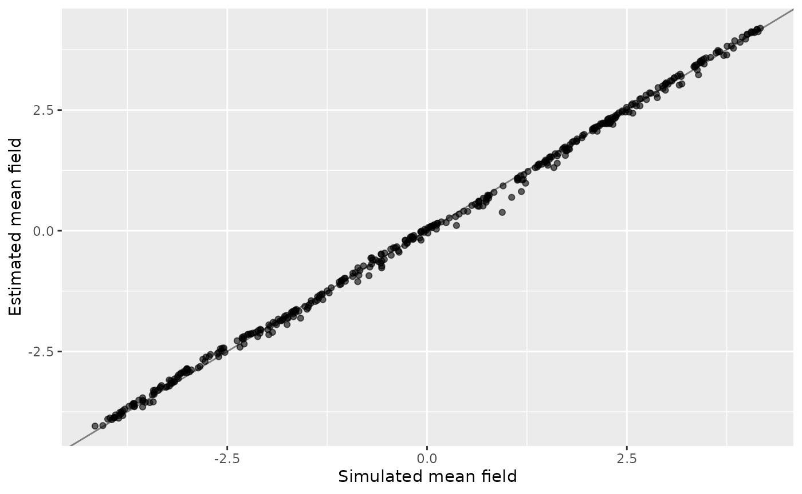
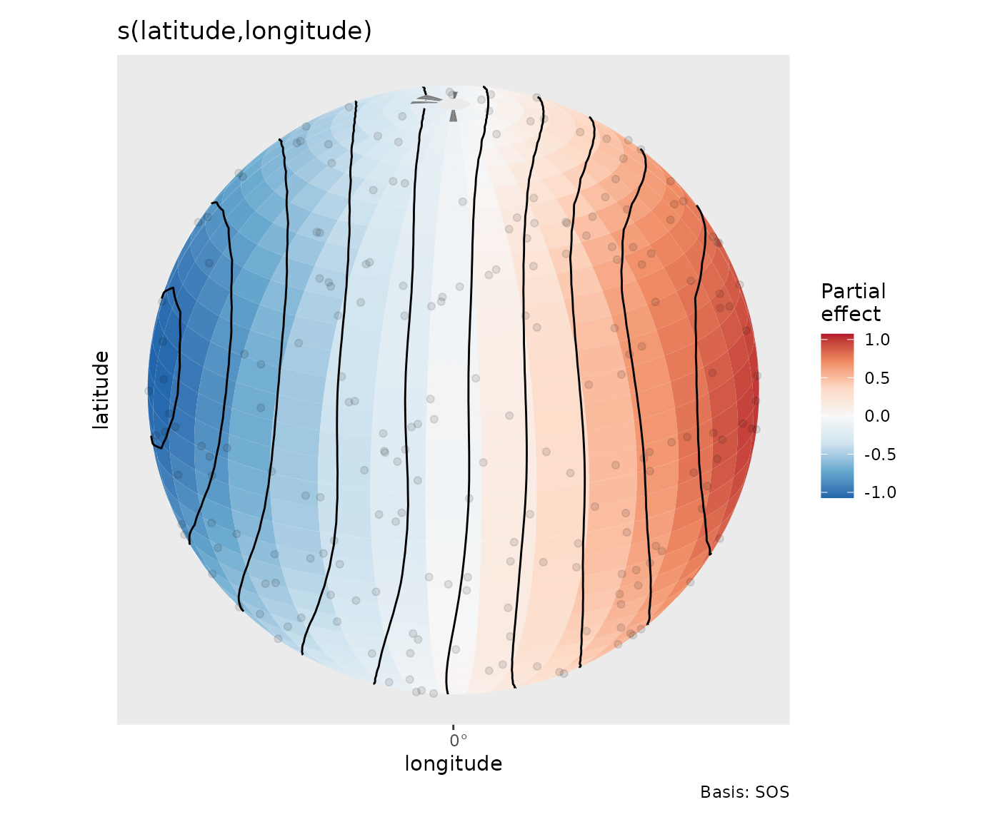

What counts as nearby depends on the setting. Districts can be neighbours because their boundaries touch. Locations in a lake can be close on a map but separated by land. On a globe, points with longitudes near 180° E and 180° W can lie next to each other. This article fits and plots a smooth for each setting.
Load {gratia}, {mgcv} and {ggplot2} for fitting the models and plotting their effects.
The examples require mgcv 1.9-4 or later. Drawing the spherical map also needs the optional {sf} package.
Markov random fields for district effects
The Columbus data supplied with mgcv record residential burglary and car theft rates per 1,000 households in 49 districts. They also record household income in thousands of dollars and provide district polygons. We use a Gaussian model for the rates. A Poisson model would need the original crime counts and the number of households in each district. See the data documentation for the original source.
We adapt the worked examples in mgcv’s Markov random field documentation. The smooth gives each district an effect and penalises differences between neighbours. Here, districts are neighbours if their polygons have at least one vertex in common. Load the measurements and district polygons, then plot crime rate against income.
data("columb", package = "mgcv")
data("columb.polys", package = "mgcv")
ggplot(columb, aes(income, crime)) +
geom_point() +
labs(x = "Household income (thousands of dollars)",
y = "Burglaries and auto thefts per 1,000 households")
First fit the district effects alone, using either one coefficient per district or a smaller basis. Then add an income smooth to ask how much geographical variation remains after accounting for income.
district_full <- gam(crime ~ s(district, bs = "mrf",
xt = list(polys = columb.polys)), data = columb, method = "REML")
district_small <- gam(crime ~ s(district, bs = "mrf", k = 20,
xt = list(polys = columb.polys)), data = columb, method = "REML")
district_income <- gam(crime ~ s(district, bs = "mrf", k = 20,
xt = list(polys = columb.polys)) + s(income, k = 6),
data = columb, method = "REML")
overview(district_income)
#>
#> Generalized Additive Model with 3 terms
#>
#> term type k edf ref.edf statistic p.value
#> <chr> <chr> <dbl> <dbl> <dbl> <dbl> <chr>
#> 1 Intercept parametric NA 1 1 22.2 <0.001
#> 2 s(district) MRF 19 5.43 19 0.512 0.0766
#> 3 s(income) TPRS 5 1.00 1.00 28.5 <0.001The full basis starts with one coefficient per district, and the
smooth is centred to separate it from the intercept. With
k = 20, the smooth still estimates an effect for all 49
districts. It uses fewer coefficients, which limits the spatial patterns
it can represent. Including income shows how the district effects change
after accounting for its association with crime rate.
Estimate and plot district effects
Use smooth_estimates() to obtain each district’s
estimated contribution and uncertainty. The output identifies districts
even when the fitted basis has fewer coefficients than there are
districts.
area_effects <- smooth_estimates(district_income, select = "s(district)",
interval = "credible")
head(area_effects)
#> # A tibble: 6 × 9
#> .smooth .type .by .estimate .se district .crit .lower_ci .upper_ci
#> <chr> <chr> <chr> <dbl> <dbl> <fct> <dbl> <dbl> <dbl>
#> 1 s(district) MRF NA -4.36 6.26 0 1.96 -16.6 7.91
#> 2 s(district) MRF NA -4.71 4.97 1 1.96 -14.4 5.02
#> 3 s(district) MRF NA -3.08 4.01 2 1.96 -10.9 4.78
#> 4 s(district) MRF NA -2.46 4.06 3 1.96 -10.4 5.50
#> 5 s(district) MRF NA 0.614 2.73 4 1.96 -4.74 5.97
#> 6 s(district) MRF NA -0.481 5.62 5 1.96 -11.5 10.5The same district labels identify prediction locations supplied with
data. Predictions require districts included in the fitted
model; adjacency alone does not supply an effect for a new district.
Plot the saved district estimates, then the income smooth. The two plots show the separate contributions to the fitted crime rate.
draw(area_effects, angle = 90,
ylab = "District contribution to crime rate", xlab = "District")
draw(district_income, select = "s(income)",
xlab = "Household income (thousands of dollars)",
ylab = "Income contribution to crime rate")
A positive district effect raises the fitted rate above the sum of the intercept and the income contribution. Fitted rates decline with income, and many individual district effects have wide intervals. An interval for the difference between two districts needs to account for the covariance of their estimated effects. The penalty encourages similar fitted effects for neighbours. The model assumes independent errors around those fitted rates, so check the residuals for remaining spatial patterns.
To see how much the smaller spatial representation changes the fitted pattern, compare its area effects on the same district labels:
rank_effects <- rbind(
transform(smooth_estimates(district_full), representation = "Full"),
transform(smooth_estimates(district_small), representation = "Reduced")
)
ggplot(rank_effects, aes(district, .estimate, colour = representation)) +
geom_point(position = position_dodge(width = 0.5)) +
labs(x = "District", y = "District contribution to crime rate",
colour = "Representation") +
theme(axis.text.x = element_text(angle = 90, hjust = 1))
Use this comparison to assess whether the smaller basis retains the district patterns of interest. To inspect the distribution of the estimated district effects, use a normal QQ plot.
draw(district_income, select = "s(district)", mrf_plot = "qq")
The QQ plot compares the distribution of the fitted district effects
with a normal distribution. Read it as a description of these estimates,
which can be correlated and have different variances. To check the
response distribution, use appraise() as shown in the model diagnostics article.
Use penalty() to inspect how the model penalises its
fitted coefficients. For the reduced basis used here, the matrix is
expressed in basis coefficients rather than one row and column per
district.

In district coordinates, the unscaled penalty matrix has the number of neighbours on the diagonal and a value of −1 for each neighbouring pair. Those entries penalise squared differences between neighbouring district effects. The plot shows the penalty after it has been expressed in the smaller basis.
Soap-film smooths for bounded regions
Across a peninsula, the straight-line distance between two locations
can be much shorter than the distance by water. A soap-film smooth uses
the water boundary to avoid smoothing directly across the land. We use a
simulation from mgcv’s soap-film
example, retaining its curved boundary, interior knots and simulated
test surface. The boundary represents a water body around a peninsula;
v and w are its spatial coordinates. We sample
locations inside it and add independent Gaussian noise with standard
deviation 0.3 to a known mean surface. This lets us check how well the
fitted smooth recovers the surface while keeping its predictions within
the water body.
bnd <- list(mgcv::fs.boundary())
names(bnd[[1]]) <- c("v", "w")
interior_knots <- expand.grid(v = seq(-0.5, 3, by = 0.5),
w = c(-0.6, -0.3, 0.3, 0.6))
set.seed(0)
v <- runif(600, -1, 4)
w <- runif(600, -1, 1)
truth <- mgcv::fs.test(v, w, b = 1)
y <- truth + rnorm(600, sd = 0.3)
inside <- mgcv::inSide(bnd, x = v, y = w)
water <- data.frame(v = v[inside], w = w[inside],
y = y[inside], truth = truth[inside])
ggplot(water, aes(v, w, colour = y)) +
geom_path(data = as.data.frame(bnd[[1]]), aes(v, w),
inherit.aes = FALSE, colour = "grey30") +
geom_point(size = 1) +
coord_equal() +
labs(x = "v coordinate", y = "w coordinate", colour = "Observed field")
Separate boundary and interior effects
Fit a Gaussian model with two soap-film components: sf
describes variation around the boundary and its extension into the
interior, while sw adds variation inside the boundary. We
estimate both components together using REML.
water_fit <- gam(y ~
s(v, w, bs = "sf", k = 30, xt = list(bnd = bnd, nmax = 100)) +
s(v, w, bs = "sw", k = 30, xt = list(bnd = bnd, nmax = 100)),
data = water, knots = interior_knots, method = "REML")
overview(water_fit)
#>
#> Generalized Additive Model with 3 terms
#>
#> term type k edf ref.edf statistic p.value
#> <chr> <chr> <dbl> <dbl> <dbl> <dbl> <chr>
#> 1 Intercept parametric NA 1 1 -0.973 0.331
#> 2 s.v.w. Soap film (boundary) 28 15.6 28 850. <0.001
#> 3 s.v.w..1 Soap film (wiggly) 32 0.00141 32 0.0000397 0.458
smooths(water_fit)
#> [1] "s(v,w)" "s(v,w)"sf fits a cyclic smooth around the closed boundary and
extends it into the interior as a surface satisfying Laplace’s equation.
sw adds variation in the interior and is zero on the
boundary. Adding the two contributions and the intercept gives the
fitted mean. k sets the boundary basis size, and the number
of supplied knots sets the interior basis size. nmax = 100
sets the resolution of the grid used to compute the basis.
Plot the two components on the same colour scale to compare the size of their contributions. The boundary is drawn on each panel so the locations are clear.
draw(water_fit, n_2d = 35, surface = "tile", caption = TRUE, ncol = 1,
scales = "fixed", contour = FALSE,
xlab = "v coordinate", ylab = "w coordinate")
In this simulation the interior adjustment is close to zero, so the
second panel is nearly flat on the shared colour scale. Almost all the
fitted variation comes from the surface that extends the boundary
smooth. To save the interior component, select it by position with
select = 2 because both components share the label
s(v,w).
interior_effect <- smooth_estimates(water_fit, select = 2,
n_2d = 30, clip = TRUE)
head(interior_effect)
#> # A tibble: 6 × 9
#> .smooth .type .by .estimate .se .bndry .loop v w
#> <chr> <chr> <chr> <dbl> <dbl> <lgl> <int> <dbl> <dbl>
#> 1 s(v,w) Soap film (wiggly) NA 2.02e-7 3.21e-5 FALSE NA -0.886 -0.155
#> 2 s(v,w) Soap film (wiggly) NA 2.20e-7 4.42e-5 FALSE NA -0.886 -0.0925
#> 3 s(v,w) Soap film (wiggly) NA 1.62e-7 4.81e-5 FALSE NA -0.886 -0.0305
#> 4 s(v,w) Soap film (wiggly) NA 7.99e-8 4.79e-5 FALSE NA -0.886 0.0315
#> 5 s(v,w) Soap film (wiggly) NA 5.54e-9 4.37e-5 FALSE NA -0.886 0.0935
#> 6 s(v,w) Soap film (wiggly) NA 9.20e-7 9.37e-5 FALSE NA -0.739 -0.464clip = TRUE drops evaluation points outside the
boundary. With clip = FALSE, those estimates are
NA. Rows marked .bndry = TRUE record the
outline so that draw() can show it with the saved
estimates.
The simulated truth makes it possible to assess the complete fitted surface:
water$estimated <- fitted(water_fit)
sqrt(mean((water$estimated - water$truth)^2))
#> [1] 0.08519373
ggplot(water, aes(truth, estimated)) +
geom_abline(slope = 1, intercept = 0, colour = "grey50") +
geom_point(alpha = 0.6) +
labs(x = "Simulated mean field", y = "Estimated mean field")
The fitted values follow the simulated mean closely at the sampled locations. When adapting this model to a water body, spread the interior knots across the water and keep boundary features, such as peninsulas, that should block smoothing across land.
Spherical smooths for global locations
A spline on the sphere accounts for the way longitude wraps at 180° and converges at the poles. We adapt mgcv’s spherical smooth example to simulate measurements at 400 locations distributed uniformly over the globe. The mean surface varies with latitude and longitude and is continuous at the poles. We add independent Gaussian noise with standard deviation 0.2. The coordinates are in degrees and the response units are arbitrary.
set.seed(90)
globe <- data.frame(
latitude = asin(runif(400, -1, 1)) * 180 / pi,
longitude = runif(400, -180, 180)
)
globe$truth <- with(globe,
sin(longitude * pi / 180) * cos(latitude * pi / 180))
globe$observed <- globe$truth + rnorm(400, sd = 0.2)Fit a Gaussian model with a spherical smooth of latitude and longitude, using REML to estimate its smoothness. Calculate the root mean squared error between the fitted values and the known mean surface to assess recovery at the sampled locations.
globe_fit <- gam(observed ~ s(latitude, longitude, bs = "sos", k = 60),
data = globe, method = "REML")
sqrt(mean((fitted(globe_fit) - globe$truth)^2))
#> [1] 0.04255861The smooth requires latitude first and longitude second, both in
degrees. Use crs to choose a map projection. This
orthographic projection shows the hemisphere centred on latitude 20° and
longitude 0°.
if (requireNamespace("sf", quietly = TRUE)) {
draw(globe_fit, n_2d = 35, rug = TRUE,
crs = "+proj=ortho +lat_0=20 +lon_0=0")
}
This projection clips the map to the visible hemisphere. You can
choose a different projection to view the same fitted surface. Factor-by
spherical effects use separate panels for each level. Supply a regular
prediction grid to draw a map with cells. For scattered prediction
locations, draw() uses points.